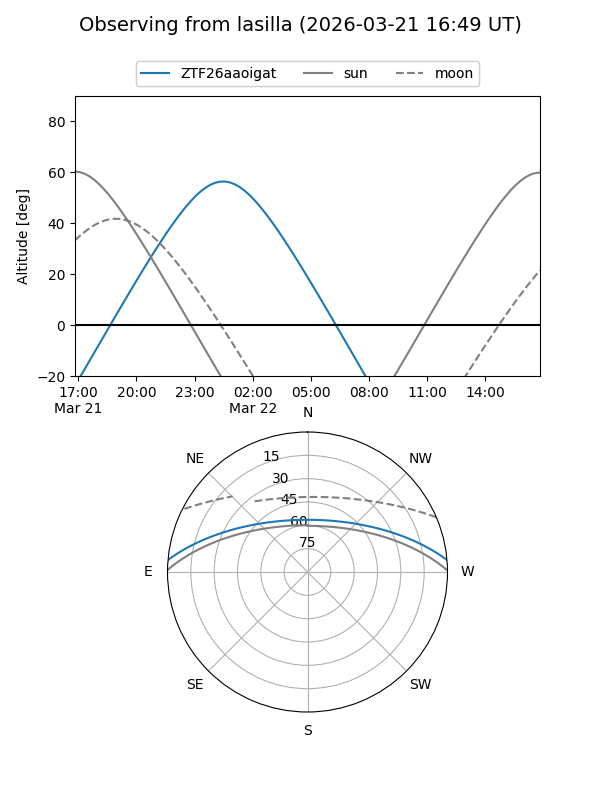
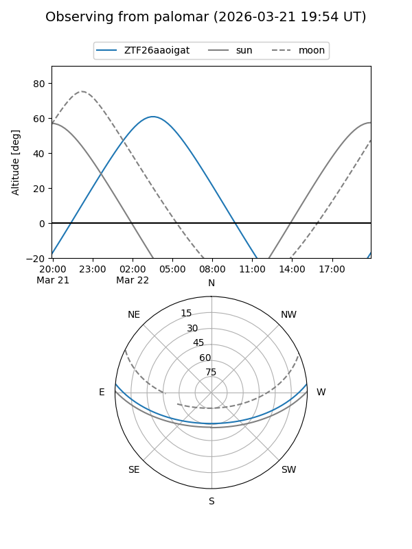

ZTF26aaoigat
Target ZTF26aaoigat at 2026-03-22 03:49
Aliases and brokers:
FINK: link
Lasair: link
ALeRCE: link
alt names
ZTF26aaoigat (ztf,fink_ztf)
Coordinates:
equatorial (ra, dec) = 115.5518,+4.37791
equatorial (HMS+DMS) = 07:42:12.44,+04:22:40.46
galactic (l, b) = (214.8137,+13.28420)
Flags:
Photometry:
last ztfg=20.07
1 ztfg detections
Lightcurve
Visibility


Additional plots